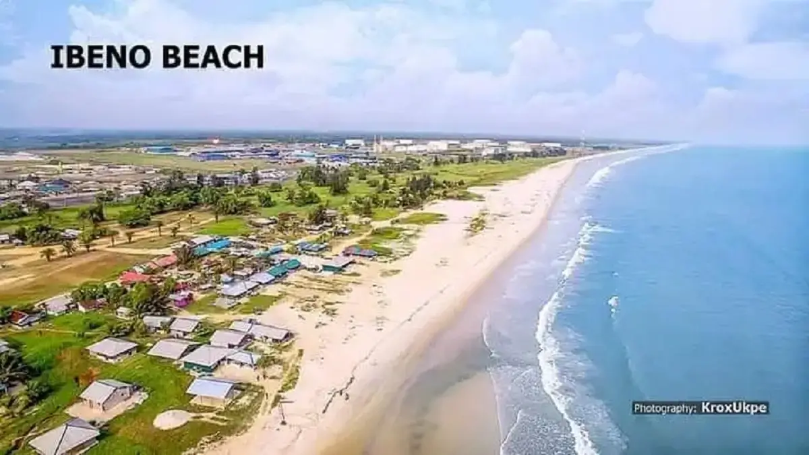

About Nigeria
Nigeria is a country in West Africa known for its diverse cultures, languages, landscapes, and rich history. It is home to many different ethnic groups and is one of the most populous countries in Africa.
Nigeria has a variety of natural environments, including tropical forests, savannas, rivers, and coastal areas. Its people are known for their vibrant traditions, music, food, and hospitality.
Weather
Temperature: 28 °C
Wind Speed: 10 km/h
Wind Chill: N/A